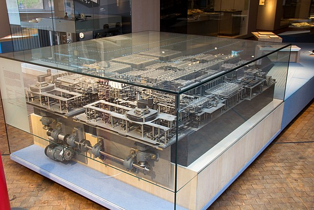
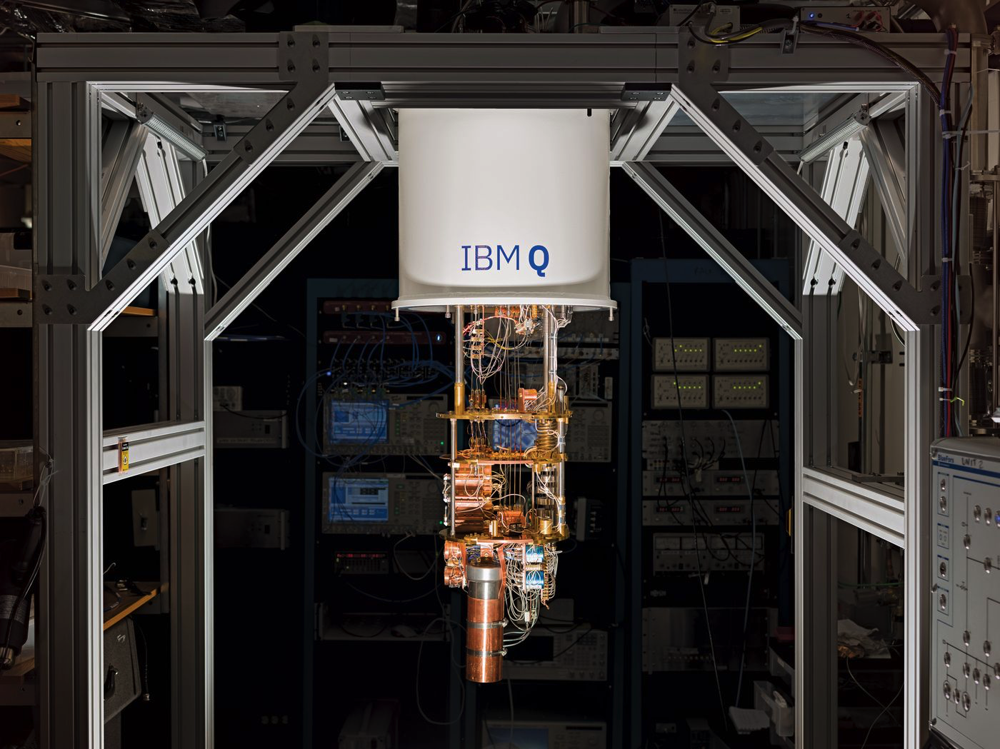

Что же такое компьютер
Мы будем говорить про классические цифровые (а именно — двоичные) электронные программируемые вычислители.
Про что мы говорить не будем

Аналоговое устройство для вычислений — логарифмическая линейка
 Арифмометр «Феликс»
Арифмометр «Феликс»
The Z1 was a motor-driven mechanical computer designed by Konrad Zuse from 1936 to 1937, which he built in his parents' home from 1936 to 1938. It was a binary electrically driven mechanical calculator with limited programmability, reading instructions from punched celluloid film.

Цифровой двоичный программируемый механический вычислитель Z1 (модель)
ENIAC (/ˈɛniæk/; Electronic Numerical Integrator and Computer) was the first programmable, electronic, general-purpose digital computer, completed in 1945. Although ENIAC was designed and primarily used to calculate artillery firing tables for the United States Army's Ballistic Research Laboratory, its first program was a study of the feasibility of the thermonuclear weapon.
.jpg)
Бетти Джин Дженнигс и Рут Байлас программируют электронный компьютер ENIAC

Квантовый компьютер IBM Q
Про что мы говорить будем: архитектура фон Неймана
https://skillbox.ru/media/code/printsipy-fon-neymana-i-pervye-kompyutery-na-ikh-osnove/

Фон-Неймановский компьютер:
- электронный, цифровой;
- адресуемая память — набор одинаковых пронумерованных ячеек;
- хранимая программа в виде набора инструкций;
- инструкции исполняются по одной, в определённой последовательности; есть IP — instruction pointer, ячейка памяти внутри control unit, где хранится адрес текущей инструкции;
- инструкции и данные хранятся в одной и той же памяти, инструкции можно обрабатывать как данные.
Von Neumann bottleneck: одна и та же шина памяти используется для передачи инструкций и данных.
Типичный шаг исполнения программы:
- fetch — из памяти приносим следующую инструкцию;
- decode — определяем, как она будет исполняться;
- execute — исполнение:
- производим вычисления и обновляем операнды;
- обновляем instruction pointer.
┌───────────────┐
│ │
│ │ ┌─────────────┐
...│ │ │ IP │
├───────────────┤ │ │
247│ add x, 1 │◄──────┐ │ │
├───────────────┤ └─────┤ 247 │
248│ jmp 247 │ └─────────────┘
├───────────────┤
249│ │
├───────────────┤
250│ │
├───────────────┤
...│ │
│ │
│ │
│ │
└───────────────┘
ISA (instruction set architecture) — набор инструкций конкретного компьютера, их семантика и способ кодирования в памяти. Примеры ISA: x86, ARM, MIPS, RISC-V.
Компьютеры с одинаковой ISA могут быть по-разному устроены на уровне микроархитектуры — от этого может зависеть скорость или эффективность исполнения программ.
См. также: гарвардская архитектура (инструкции и данные отдельно): https://en.wikipedia.org/wiki/Harvard_architecture